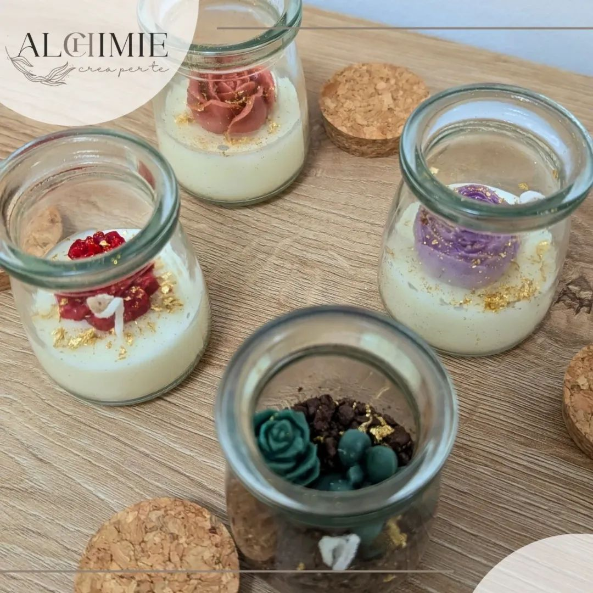
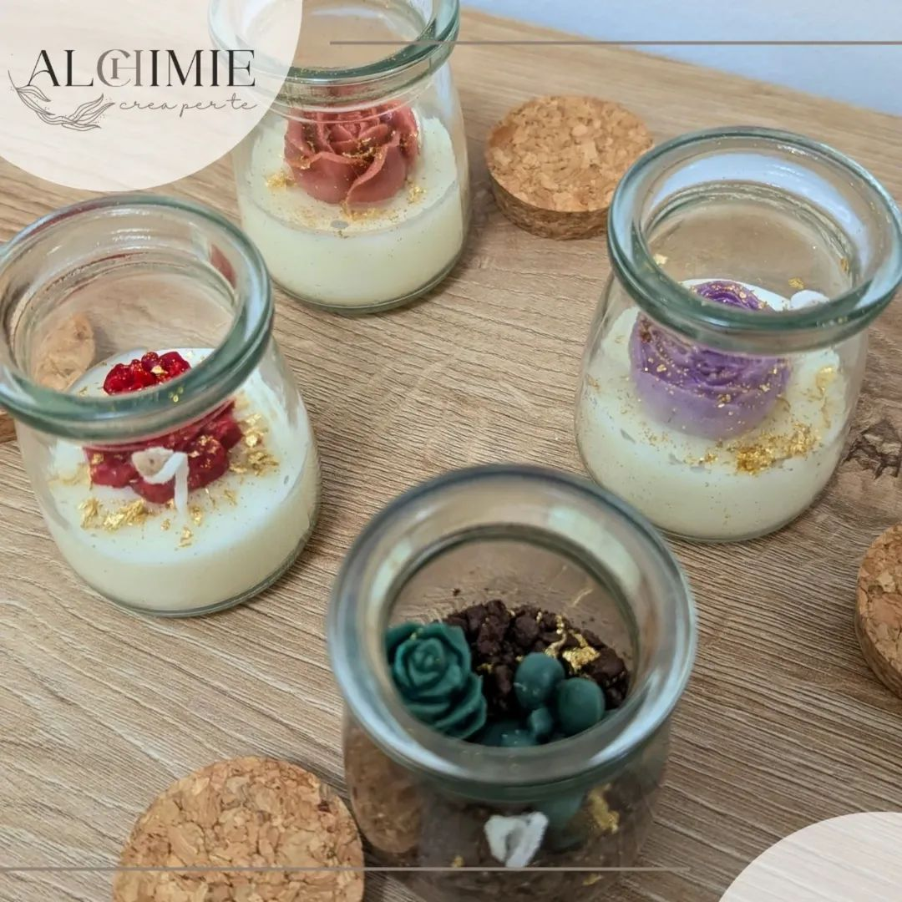

Alchimie è il luogo dove emozioni e creatività si incontrano. Creiamo candele artigianali e bomboniere personalizzate, pensate per raccontare la tua storia e rendere unico ogni evento speciale. Con Elisa nasce la candela, autentica e realizzata a mano; con Jessica prende forma la veste grafica e il packaging, studiati su misura per te. Ogni progetto è un gesto d'amore, creato solo per te.

Bomboniere Artigianali
Candele uniche realizzate a mano con cera d'api, di oliva e di girasole. Completamente personalizzabili in colori, profumazioni, grafiche e packaging. Sono il dono perfetto per matrimoni, battesimi, comunioni, lauree ed eventi speciali. Un ricordo naturale ed elegante da custodire nel tempo.
Esplora la collezione
Segnaposto Artigianali
Piccole candele o profuma cassetti in cera d'api, di oliva e di girasole, realizzate a mano e completamente personalizzabili in colori, profumazioni, grafiche. Realizzabili con cartoline, tag o segnalibro. Perfetti come segnaposto eleganti e originali. Trasformano ogni tavola in un ricordo speciale.
Esplora la collezione
Saccoccini Porta Confetti
Eleganti sacchetti sartoriali, realizzati con tessuti naturali e personalizzabili in colori, grafiche e dettagli, con possibilità di ricamo. Perfetti per matrimoni, battesimi, comunioni ed eventi speciali. Custodiscono dolci ricordi in modo raffinato e unico.
Esplora la collezioneBomboniere Artigianali
Candele uniche realizzate a mano con cera d'api, di oliva e di girasole. Completamente personalizzabili in colori, profumazioni, grafiche e packaging. Sono il dono perfetto per matrimoni, battesimi, comunioni, lauree ed eventi speciali. Un ricordo naturale ed elegante da custodire nel tempo.


Bamboo Luxe Pianta
Candela in vetro, con doppia personalizzazione. Barattolo + tappo.
Vasta scelta di piantine.
Materiale: miscela artigianale di cere naturali (girasole, api, oliva)
Misura: diametro 10cm
Può essere scelta la confezione con scatola personalizzata oppure "nuda" con nastro in chiffon.


Bamboo Luxe Rosa
Candela in vetro, con doppia personalizzazione. Barattolo + tappo.
Materiale: miscela artigianale di cere naturali (girasole, api, oliva)
Misura: diametro 10cm
Può essere scelta la confezione con scatola personalizzata oppure "nuda" con nastro in chiffon.

Bolla Botanica
Candela artigianale in contenitore trasparente con decorazioni botaniche.
Materiale: miscela artigianale di cere naturali (girasole, api, oliva)
Misura: circa 12x7 cm
Personalizzazione con frasi o nomi sul vetro.
Candle Stone 380gr
Maxi candela con pietra preziosa all'interno.
Materiale: miscela artigianale di cere naturali (girasole, api, oliva)
Misura: diametro 15 cm
Etichetta personalizzata e tappo inciso.
Ecoquadra
Candela in vetro, con personalizzazione. Vasta scelta tra piante e fiori.
Materiale: miscela artigianale di cere naturali (girasole, api, oliva)
Misura: circa 8 cm
Confezione con scatola personalizzata.
Fioriera
Candela in contenitore in gesso (realizzato anch'esso artigianalmente), con fiorellini. Personalizzabile in vari colori.
Materiale: miscela artigianale di cere naturali (girasole, api, oliva)
Misura: circa 10 cm
Confezione con scatola personalizzata.

Vaso in Gesso
Candela in vaso in gesso (realizzato anch'esso artigianalmente), con vari fiori a scelta. Personalizzabile anche il colore del vaso.
Materiale: miscela artigianale di cere naturali (girasole, api, oliva)
Misura: diametro circa 8 cm
Confezione con scatola personalizzata.

Principessa
Candela profumata a forma di principessa.
Materiale: miscela artigianale di cere naturali (girasole, api, oliva)
Misura: circa 8 cm
Confezione a scelta tra scatola e teca in legno/plex.
Peonia
Candela profumata a forma di peonia.
Materiale: miscela artigianale di cere naturali (girasole, api, oliva)
Misura: circa 7x6 cm
Confezione personalizzata.
 

Mini Terrario
Candela in vetro realizzabile in versione floreale o come mini terrario in cera.
Materiale: miscela artigianale di cere naturali (girasole, api, oliva)
Misura: circa 7 cm
Confezione personalizzata.
Segnaposto Artigianali
Piccole candele o profuma cassetti in cera d'api, di oliva e di girasole, realizzate a mano e completamente personalizzabili in colori, profumazioni, grafiche. Realizzabili con cartoline, tag o segnalibro. Perfetti come segnaposto eleganti e originali. Trasformano ogni tavola in un ricordo speciale.
Segnaposto Girasole
Profuma cassetto o candela.
Materiale: miscela artigianale di cere naturali (girasole, api, oliva).
Misura: diametro 5 cm.
Segnaposto Margherita
Profuma cassetto o candela.
Materiale: miscela artigianale di cere naturali (girasole, api, oliva).
Misura: diametro 5 cm.
Segnaposto Stella
Profuma cassetti.
Materiale: miscela artigianale di cere naturali (girasole, api, oliva).
Misura: circa 3 × 3 cm.
Segnaposto Rosa
Profuma cassetti.
Materiale: miscela artigianale di cere naturali (girasole, api, oliva).
Misura: circa 3,5 × 3 cm.
Segnaposto Bimbi Arcobaleno
Profuma cassetti.
Materiale: miscela artigianale di cere naturali (girasole, api, oliva).
Misura: circa 3,5 × 3 cm.
Segnaposto Cuore
Profuma cassetti.
Materiale: miscela artigianale di cere naturali (girasole, api, oliva).
Misura: circa 3 × 3 cm.

Segnaposto Animali Bimbi
Profuma cassetti.
Materiale: miscela artigianale di cere naturali (girasole, api, oliva).
Misura: circa 3 × 3 cm.
Saccoccini e scatoline porta confetti
Eleganti sacchetti sartoriali, realizzati con tessuti naturali e personalizzabili in colori, grafiche e dettagli, con possibilità di ricamo. Perfetti per matrimoni, battesimi, comunioni ed eventi speciali. Custodiscono dolci ricordi in modo raffinato e unico.
Saccoccini Sartoriali
Saccoccini porta confetti realizzati a mano in vari modelli.
Materiale: stoffa e/o cotone
Misura: circa 7 cm
Personalizzazioni: interamente personalizzabili
Saccoccino Mongolfiera Bimbi
Saccoccino sartoriale portaconfetti a forma di mongolfiera, pensato per i più piccoli e interamente personalizzabile.
Materiale: stoffa
Misura: circa 8 cm


Segnaposto Farfallina Floreale
Profuma cassetto.
Materiale: miscela artigianale di cere naturali (girasole, api, oliva).
Misura: 3,5 × 4,5 cm circa.
Chi siamo
Alchimie è un laboratorio creativo dove ogni dettaglio è pensato per emozionare. Nasciamo come brand di candele in barattolo personalizzate, ispirate alla natura, con uno stile botanico e delicato, utilizzando solo cere naturali e fragranze di qualità a norma di legge. Le nostre creazioni raccontano storie attraverso profumi, texture e colori scelti insieme a te.
Con il tempo abbiamo ampliato il nostro mondo, mantenendo intatta l'anima artigianale:
- piccoli allestimenti da tavolo con palloncini
- segnaposto unici, in cera o in legno inciso
- scritte personalizzate in legno o plexiglass oro/argento
- saccoccini sartoriali e scatoline uniche per confezionare ogni prodotto con stile
Alchimie crea per te un percorso fatto di emozioni. Elisa realizza a mano le tue candele, uniche e personalizzate; ogni scelta e dettaglio sarà condiviso con te, perché il risultato finale sia autentico e sentito, proprio come i tuoi ricordi. Con Jessica, immaginerete insieme grafiche, packaging e confezionamento studiati su misura per vestire le tue bomboniere con eleganza e lo stile che più ti appartiene. Alchimie è il tuo spazio creativo: ogni progetto nasce esclusivamente per te, con noi.
Contattaci
Hai bisogno di informazioni o vuoi semplicemente farci un saluto? Scrivici pure! Puoi contattarci via email, telefono o WhatsApp, oppure compilare il form qui sotto e ti risponderemo al più presto.
Privacy Policy
La presente informativa sulla privacy descrive come Alchimie Crea per Te raccoglie, utilizza e protegge i dati personali dei visitatori del sito web.
1. Titolare del trattamento
Il titolare del trattamento dei dati personali è Alchimie Crea per Te. Puoi contattarci via email a info@alchimiecreaperte.it o telefono (+39) 351.8644668.
2. Tipologia di dati raccolti
- Dati forniti volontariamente tramite form di contatto (nome, email, messaggio).
- Dati tecnici raccolti automaticamente dal sito (indirizzo IP, browser, pagina visitata, tempo di permanenza).
3. Finalità del trattamento
- Rispondere a richieste di informazioni tramite form o contatto diretto.
- Migliorare il sito web e la navigazione degli utenti.
- Rispetto degli obblighi di legge.
4. Modalità del trattamento
I dati sono trattati in forma elettronica e cartacea, con misure di sicurezza adeguate per garantire la riservatezza e la protezione dei dati personali.
5. Conservazione dei dati
I dati raccolti tramite il form di contatto vengono conservati fino alla risposta alla richiesta dell'utente e comunque non oltre il tempo necessario previsto dalla legge.
6. Diritti dell'interessato
Gli utenti possono esercitare i propri diritti ai sensi del Regolamento UE 2016/679 (GDPR), tra cui:
- Accesso ai propri dati personali.
- Richiesta di rettifica o cancellazione dei dati.
- Limitazione o opposizione al trattamento.
- Portabilità dei dati.